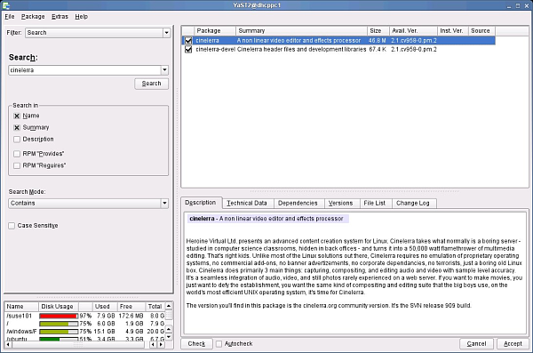

| [ << ] | [ >> ] | [Top] | [Contents] | [Index] | [ ? ] |
A continuación se muestra el contenido de todos los paquetes de Cinelerra.
Cinelerra es un programa muy exigente en cualquier PC, ya que leer, decodificar y reproducir vídeo son actividades que suponen un gran consumo de recursos. Por lo tanto, el rendimiento de Cinelerra y su usabilidad son directamente proporcionales al formato de vídeo usado (SVCD/DV/HDV/HD/etc), la velocidad de la CPU y del bus de entrada/salida y las arquitecturas de memoria y vídeo de su equipo. Es evidente, por lo tanto, que los usuarios que sólo trabajen con audio o formatos de vídeo de baja resolución tendrán suficiente con un un sistema corriente. Sin embargo, ese mismo sistema podría ralentizarse considerablemente al reproducir un formato de mayor resolución, como un vídeo DV. Estos problemas se acentuarán al usar efectos o varias pistas de audio. Con estas restricciones, podemos proporcionar algunas sugerencias para la ejecución de Cinelerra:
Para instalar Cinelerra deberá disponer de una versión actual de GNU/Linux con XFree86 y alguna aplicación de gestión de audio funcionando correctamente. También debería tener instaladas las siguientes bibliotecas (la lista no es completa):
Puede instalar Cinelerra CV descargando las fuentes y compilándolas. Éste es el método que debe usar si desea disponer de la versión más actual de Cinelerra CV.
svn checkout svn://svn.skolelinux.org/cinelerra/trunk/hvirtualsvn updatesvn checkout -r <revision>
svn://svn.skolelinux.org/cinelerra/trunk/hvirtual
cd hvirtual
autoreconf -i --force
./configure --with-buildinfo=svn/recompile./configure --help
makemake 2>&1 | tee logfile
sudo make install
Notas:
./configure
con la opción `--enable-mmx' . Si lo hace, probablemente tenga que usar la opción
`--without-pic' además, ya que de otro modo la compilación podría fallar.
./configure --prefix=/usr --enable-x86 --enable-mmx --enable-freetype2
--with-buildinfo=svn/recompile CFLAGS='-O3 -pipe -fomit-frame-pointer
-funroll-all-loops -falign-loops=2 -falign-jumps=2 -falign-functions=2
-ffast-math -march=pentium-m -mfpmath=sse,387 -mmmx -msse'
./configure (sustituya `xxx' por el número de la versión que está
compilando):./configure prefix=/usrcd posudo make installcd /usr/local_cinelerra/r960./cinelerra_r960
Cuando Cinelerra CV falla, se puede optar por compilarlo con símbolos de depuración y ejecutarlo desde gdb. La información que proporciona gdb es mucho más detallada y ayuda a los desarrolladores de Cinelerra CV a encontrar los fallos antes.
En primer lugar, obtenga las fuentes del repositorio SVN como de costumbre.
A continuación, ejecute los siguientes comandos:
cd hvirtual
nice -19 autoreconf -i --force
mkdir ../hvdbg
cd ../hvdbg
nice -19 ../hvirtual/configure CXXFLAGS='-O0 -g' CFLAGS='-O0 -g'
--with-buildinfo=svn/recompile
cd quicktime/ffmpeg
nice -19 make CFLAGS='-O3'
cd ../..
nice -19 make
nice -19 make install
Consulte la sección, para obtener información sobre cómo ejecutar Cinelerra CV desde gdb.
La forma más sencilla de ejecutar Cinelerra es ejecutar /usr/bin/cinelerra
También hay disponibles opciones para línea de comandos, escribiendo cinelerra -h.
Estas opciones se describen en varias secciones posteriores. En particular, puede obtener
información sobre cómo renderizar un proyecto desde línea de comandos en
Si obtiene este mensaje de error al ejecutar Cinelerra por primera vez:
WARNING:/proc/sys/kernel/shmmax is 0x2000000, which is too low}
consulte
Andraz TORI mantiene instrucciones de empaquetamiento para Debian Sid. También También ofrece paquetes binarios .deb para Sid. Están construidos a partir de los lanzamientos no oficiales del SVN. Los paquetes de Debian Sid se pueden encontrar aquí:
deb http://www.kiberpipa.org/~minmax/cinelerra/builds/sid/ ./
deb http://www.kiberpipa.org/~minmax/cinelerra/builds/pentium4/ ./
deb http://www.kiberpipa.org/~minmax/cinelerra/builds/pentiumm/ ./
deb http://www.kiberpipa.org/~minmax/cinelerra/builds/athlonxp/ ./
deb http://giss.tv/~vale/debian64/ ./
Nota: Si Cinelerra produce el siguiente error:
cinelerra: relocation error: /usr/lib/libavcodec.so.0.4.8:
undefined symbol: faacDecOpen
puede resolver este problema mediante el siguiente comando (como superusuario, "root"):
apt-get install --reinstall libfaad2-0=2.0.0-0.5
Necesita poseer ciertos prerrequisitos que no se encuentran en los repositorios
oficiales de Debian. Deberá añadir a su fichero `/etc/apt/sources.list' la
siguiente línea, que es el repositorio de Christian Marillat:
deb http://www.debian-multimedia.org/ sid main
Para poder usar este repositorio, debe añadir a su gestor de claves gpg la de Marillat:
gpg --keyserver hkp://wwwkeys.eu.pgp.net --recv-keys 1F41B907
gpg --armor --export 1F41B907 | sudo apt-key add -
Si no utiliza sudo, puede sustituir la línea anterior por la siguiente, ejecutada como root:
gpg --armor --export 1F41B907 | apt-key add -
MUZZOL construyó paquetes de Cinelerra para Ubuntu Edgy. Para instalarlos con Gestor de Paquetes Synaptic vaya a Settings -> Repositorios. En la ventana de Fuentes de Software, asegúrese de tener universo, multiverso y fuentes restringidas chequeados. Pulse sobre la pestaña Third Party. Pulse el botón Añadir y escriba el siguiente repositorio en la ventana que aparece:
deb http://www.kiberpipa.org/~muzzol/cinelerra/edgy-i386/ ./
Al pulsar ahora en Añadir fuente, el nuevo repositorio aparecerá disponible y habilitado en la ventana de Fuentes de Software.
Alternativamente, puede añadir la siguiente línea directamente a su fichero `/etc/apt/sources.list'
deb http://www.kiberpipa.org/~muzzol/cinelerra/edgy-i386/ ./
Hecho esto, debería poder encontrar Cinelerra en Synaptic.
Para instalar Cinelerra con el Instalador de Paquetes GDebi, diríjase a esta página:
http://www.kiberpipa.org/~muzzol/cinelerra/edgy-i386/.
Pulse el enlace cinelerra_2.1.0+svn20070109-0ubuntu1_i386.deb. Un ventana de diálogo
le pedirá que confirme su intención de abrir este fichero con el Instalador de Paquetes
GDebi. Si durante el proceso de instalación obtiene errores relativos a dependencias no
satisfechas, intente instalar la biblioteca problemática con el mismo método, desde
la misma página web.
Valentina MESSERI también construyó paquetes para Ubuntu Edgy:
Para Ubuntu Edgy:
deb http://giss.tv/~vale/ubuntu32 ./ deb-src http://giss.tv/~vale/ubuntu32 ./
Para Ubuntu Edgy AMD64:
deb http://giss.tv/~vale/ubuntu64 ./ deb-src http://giss.tv/~vale/ubuntu64 ./
Para aquellos que deseen intentar compilar el software desde el código fuente,
se puede encontrar un tutorial sobre Instalación de Cinelerra en Ubuntu 6.10
(en inglés) en:
http://www.ubuntuforums.org/showthread.php?t=320701&highlight=cinelerra
Ubuntu 6.06 Dapper Drake
Jure CUHALEV construyó los paquetes para Ubuntu Dapper (sin los repositorios de Marillat). A continuación se ofrecen las instrucciones para instalarlos.
Asegúrese de tener los repositorios universe, multiverse y fuentes restringidas habilitados, comprobando que la siguiente línea aparezca sin comentar en su fichero `/etc/apt/sources.list':
deb http://archive.ubuntu.com/ubuntu dapper universe multiverse restricted
Añada el backport para ubuntu de mjpegtools, añadiendo para ello la siguiente línea a su fichero `/etc/apt/sources.list':
deb http://www.kiberpipa.org/~gandalf/ubuntu/dapper/mjpegtools ./
Añada el paquete de Cinelerra construido para su arquitectura concreta añadiendo una de las siguientes líneas a su fichero `/etc/apt/sources.list':
Para pentium4:
deb http://www.kiberpipa.org/~gandalf/ubuntu/dapper/cinelerra/pentium4/ ./
Para i686:
deb http://www.kiberpipa.org/~gandalf/ubuntu/dapper/cinelerra/i686/ ./
Para athlonxp:
deb http://www.kiberpipa.org/~gandalf/ubuntu/dapper/cinelerra/athlonxp/ ./
Instale Cinelerra escribiendo en su consola:
apt-get update
y a continuación
apt-get install cinelerra
La instalación para Gentoo GNU/Linux es muy sencilla. Simplemente, escriba:
emerge cinelerra-cvs
como root y esto debería bastar para instalar y ejecutar Cinelerra sin problemas. Note que podría necesitar poner cinelerra en su fichero `/etc/portage/package.keywords' para poder usarla:
echo "=media-video/cinelerra-cvs-20061020" >> /etc/portage/package.keywords
Puede consultar http://www.gentoo.org/doc/en/handbook/handbook-x86.xml?part=3&chap=3 para obtener más detalles.
Nota: La versión para Gentoo llamada media-video/cinelerra-cvs-20061020 no tiene iconos para los modos de edición. Consulte si desea más información.
Puede probar Cinelerra en un computador sin tener que instalarlo en el disco duro. Esto se puede hacer usando Live CDs, que son distribuciones de GNU/Linux que arrancan desde un CD, sin necesitar instalación en un disco duro. Los siguientes son algunos de los Live CDs que se sabe que contienen Cinelerra:
Cinelerra se incluye en el repositorio Freshrpms, en http://freshrpms.net. La forma más fácil de instalar paquetes de Freshrpms es incluir el repositorio en la configuración de yum. Ya está incluido por defecto en Fedora 5 y 6, y Core (Núcleo) y Extras están unidos en uno solo en Fedora 7.
En Fedora 6, como superusuario (root), escriba:
rpm -ivh http://ftp.freshrpms.net/pub/freshrpms/fedora/linux/6/\ freshrpms-release/freshrpms-release-1.1-1.fc.noarch.rpm
En Fedora 5, escriba:
rpm -ivh http://ftp.freshrpms.net/pub/freshrpms/fedora/linux/5/\ freshrpms-release/freshrpms-release-1.1-1.fc.noarch.rpm
A continuación, escriba:
yum -y install cinelerra
para obtener e instalar Cinelerra y todas las dependencias, incluido ffmpeg y mjpegtools. Si esto no funciona, compruebe el fichero `/etc/yum.conf' y asegúrese de que la configuración de Freshrpms está incluida desde `/etc/yum.repos.d'.
Notas:
Los paquetes de Cinelerra para Mandriva los hace PLF, y están listos para instalar. Consulte http://plf.zarb.org/packages.php para obtener más información.
Rafael DINIZ construyó paquetes para Slackware de Cinelerra.
Hay RPMs para SuSE 9 construidos a partir de las fuentes SVN por Kevin BROSIUS, disponibles en http://cin.kevb.net/files/RPM/
Los RPMs para OpenSUSE 10.1 y 10.2, arquitecturas i586 y x86_64, están construidos a partir de las fuentes del SVN por Leon FREITAG en Packman. Están disponibles en http://packman.links2linux.org/package/cinelerra/16413.
Los paquetes RPM se pueden instalar como root en un terminal usando este comando:
rpm -Uvh package_name.rpm
El siguiente ejemplo de instalación muestra cuatro capturas de pantalla para una instalación de Cinelerra a partir de SVN en OpenSUSE 10.2 i586 usando YaST2. Primero hay que añadir el repositorio YaST2 de packman como una fuente de instalación de YaST2, y a continuación instalar el paquete con el Gestor de Software YaST2.
Arranque el Centro de Control YaST en OpenSUSE 10.2 y escriba la contraseña de superadministrador (root) cuando se le pida:
Inicie la herramienta de fuentes de instalación YaST2, escoja protocolo HTTP y añada el nombre del servidor packman como se muestra. La sincronización con Zenworks puede tardar un rato, aguarde hasta que haya acabado.

Inicie el Gestor de Software YaST2. Escriba "Cinelerra" en el campo de búsqueda izquierdo y seleccione las casillas de los paquetes de Cinelerra en los resultados de la búsqueda que aparezcan en la ventana de la derecha. Si hay una versión anterior de Cinelerra instalada, se indicará con un icono de candado. En este caso, puede probar a realizar una actualización primero o eliminarla directamente.

Pulse Aceptar para empezar la instalación del paquete y, más tarde, Siguiente para acabar.

REDÁCTEME
| [ << ] | [ >> ] | [Top] | [Contents] | [Index] | [ ? ] |
This document was generated by Raffa on octubre, 8 2007 using texi2html 1.76.